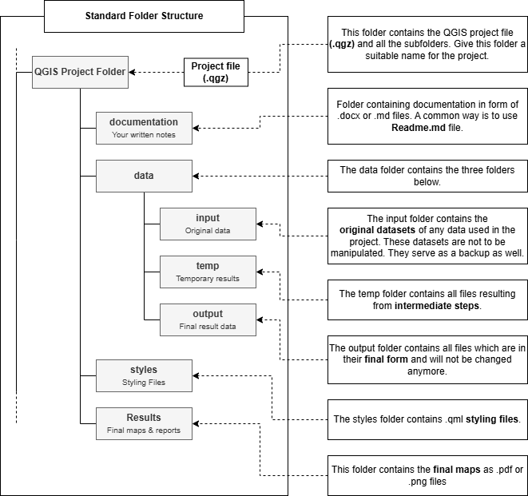

2.3. Gestión de datos geoespaciales#
En este capítulo veremos con más detalle cómo almacenar los datos geográficos en la computadora para trabajar en QGIS u otras aplicaciones SIG. Dado que los datos vectoriales son el principal tipo de datos geográficos con el que trabajará al principio de su carrera en SIG, nos centraremos en los datos geográficos vectoriales. Aprenderemos a crear una estructura de carpetas coherente para los datos y proyectos SIG y a asignar nombres correctos a los datos geográficos.
2.3.1. Fundamentos de la gestión de datos geoespaciales#
Trabajar con datos geoespaciales no es como hacerlo con datos en programas como Microsoft Excel o Word. Siempre que cargue una imagen en un archivo Word, el archivo contendrá la imagen. Si borra la imagen en su ordenador, el archivo Word seguirá conteniendo una copia de la imagen.
¡Esto no ocurre en QGIS! Cuando carga los datos geográficos en QGIS, el sistema sólo establece un enlace con la ubicación donde están almacenados los datos en su ordenador. Esto significa que su proyecto QGIS no contiene los datos geográficos, sólo enlaza con ellos. Si carga datos en su proyecto QGIS y cambia la ubicación de los datos o los borra, los datos ya no estarán disponibles en su proyecto QGIS y obtendrá un error al abrirlos.
Dado que se trabaja directamente con los datos de origen, en lugar de con una copia, cada vez que se editan datos en QGIS los cambios sustituyen a los datos de origen y no se pueden revertir. Si planea hacer cambios en sus datos, primero debe hacer una copia de ellos para tener siempre una copia “intacta” a la que pueda volver.
2.3.1.1. Estructura de carpetas estándar#
Lo más importante en la práctica de gestión de datos geoespaciales es utilizar una estructura de carpetas estandarizada que contenga todas las partes del proyecto QGIS.
Las rutas desde un proyecto QGIS a los datos geográficos son por defecto relativas. Esto significa que cuando los datos y el proyecto se encuentran en una estructura de carpetas fija, puede mover toda la estructura sin que ello afecte al proyecto QGIS o a las rutas de acceso a los datos. A continuación se explica la versión de una estructura de carpetas estandarizada que se utiliza para todos los ejercicios de esta capacitación. Puede descargar una plantilla de la estructura de carpetas aquí.
Una estructura de carpetas estándar tiene dos ventajas principales:
Si compartimos toda la carpeta del proyecto, podemos esperar que el proyecto se ejecute sin problemas en un ordenador diferente
La estructura de carpetas contribuye a la correcta organización de los datos del proyecto y ayuda a garantizar que el proyecto QGIS funcione según lo previsto
{kind=link}

Fig. 2.23 Estructura de carpetas estándar. Fuente: HeiGIT#
2.3.1.2. Nomenclatura de los datos geográficos#
Nombrar los datos correctamente le garantiza que pueda identificar las capas y que su ordenador no tenga ningún problema al trabajar con los archivos de datos. El nombre de los propios archivos debe ser claro, es decir, que usted u otras personas puedan identificar qué muestran los datos, de dónde proceden y a qué momento se refieren. En QGIS, deberá nombrar sus capas para poder identificar el contenido, así como lo ha realizado con la capa. Por ejemplo, si ha recortado una capa de calles de Nueva York, no nombre la capa “recortada”, asígnele un nombre como “calles_NYC_recortadas”.
Existen algunos principios básicos a la hora de nombrar los datos geográficos, que se producen o manipulan:
No utilice caracteres especiales como
!,?,/o-.No utilice espacios en blanco, utilice el guion bajo
_Asigne nombres significativos a las capas para que pueda entender lo que representan, incluso si son un paso temporal/intermedio en un flujo de trabajo.
A continuación puede ver un ejemplo de flujo de trabajo para procesar un conjunto de datos de límites administrativos (adm0). La finalidad de los pasos intermedios no está clara porque los nombres de las capas no tienen sentido.
adm0 >> adm0_temp >> adm0_temp2 >> adm0_temp3 >> facilities_final
A continuación, se muestra un buen sistema de nomenclatura para las capas. En este flujo de trabajo, está claro qué procesamiento se realizó en cada paso (reproyectar, recortar la capa, unir con otra capa, resultado final).
De este modo, otras personas pueden entender para qué sirven las distintas capas y si son necesarias en el proyecto final.
adm0 >> adm0_projUTM >> adm0_projUTM_clipUrban >> adm0_projUTM_clipUrban_intersectFacilities >> facilities_processed
2.3.1.3. Documentación#
La documentación es un paso importante cuando se trabaja con datos geoespaciales o se realizan análisis. Garantiza la claridad, la reproducibilidad y permite la colaboración. El análisis de datos espaciales suele implicar procesos complejos, limpieza de datos, transformaciones de datos y fuentes de datos específicas. Sin la documentación adecuada, resulta difícil para usted y para los demás comprender, reproducir o desarrollar su trabajo. La documentación ayuda a organizar el objetivo, los métodos o herramientas, las entradas y salidas de datos, así como las hipótesis y limitaciones. En general, una buena documentación permite a los profesionales de los SIG reproducir los pasos del análisis para obtener exactamente el mismo resultado. En el trabajo colaborativo, una buena documentación sirve como una hoja de ruta y es esencial cuando se trabaja en proyectos SIG. En el trabajo humanitario y en los procesos de toma de decisiones, una buena documentación es imprescindible, ya que ayuda a fundamentar la toma de decisiones que le permite a los equipos humanitarios asignar los recursos.
Puede documentar sus proyectos mediante el uso de editores markdown o simplemente con la creación de un documento en Word. Asegúrese de que se guarda en la subcarpeta de documentación de la carpeta del proyecto. No hay reglas fijas para escribir una documentación, sin embargo, seguir una estructura lógica puede ayudar a escribir y leer su documentación. También es aconsejable redactar la documentación mientras se realiza el análisis. QGIS ofrece muchas opciones y configuraciones al realizar un análisis, y puede ser fácil olvidar los parámetros que ha utilizado para un paso del análisis.
Resumen del proyecto:
Añada el título y el objetivo del proyecto.
Añada un breve resumen del análisis.
Fuentes de datos:
Lista de todos los conjuntos de datos de entrada (con enlaces si es posible)
Sistema de coordenadas utilizado
Notas sobre la calidad o las limitaciones de los datos
Programas y herramientas:
Versión de QGIS
Complementos utilizados
Flujo de trabajo y metodología:
Proceso paso a paso con capturas de pantalla o diagramas cuando sea útil
Describa cada paso del proceso (puede hacerlo con viñetas)
Mencione los parámetros clave o las decisiones tomadas
Asegúrese de que tanto usted como otras personas pueden entender y reproducir los pasos del análisis. Una buena documentación hace que su proyecto QGIS deje de ser una caja negra para convertirse en un trabajo transparente, compartible y profesional.
2.3.2. Preguntas de autoevaluación#
Ponga a prueba sus conocimientos
Tómese un momento para poner a prueba lo que ha aprendido en este capítulo respondiendo a las siguientes preguntas:
¿Dónde se guardan las capas cargadas en un proyecto QGIS? ¿Qué implicaciones tiene esto a la hora de mover o renombrar los archivos?
Respuesta
Las capas cargadas en un proyecto QGIS no se incrustan en el archivo de proyecto .qgz, sino que se vinculan mediante rutas de archivo a las fuentes de datos originales.
Esto significa que si mueve, renombra o elimina un archivo fuente después de añadirlo al proyecto, QGIS no podrá encontrarlo y la capa aparecerá dañada o faltante.
Para evitarlo, mantenga una estructura de carpetas coherente y evite cambiar las ubicaciones de los archivos una vez configurado el proyecto, o actualice las rutas de los archivos si lo hace.
Al editar los datos geográficos en QGIS, ¿Por qué se recomienda hacer primero una copia?
Respuesta
Dado que QGIS edita directamente el archivo de datos original, no se puede deshacer ni realizar una copia de seguridad automática una vez guardados los cambios.
Si comete un error durante la edición, no puede revertirlo fácilmente.
Si crea una copia del conjunto de datos antes de editarlo, conservará los datos originales y dispondrá de una solución alternativa en caso de que algo vaya mal.
¿Cuáles son las dos principales ventajas de utilizar una estructura de carpetas estandarizada para los proyectos y datos del SIG?
Respuesta
Portabilidad: Si toda la carpeta del proyecto (incluidas las subcarpetas de datos) se traslada a un nuevo ordenador o unidad de disco, el proyecto QGIS podrá seguir encontrando sus datos siempre que se utilicen rutas relativas.
Organización y coherencia: Una estructura clara y coherente ayuda a evitar el extravío de archivos, facilita la navegación por el proyecto y garantiza que los demás puedan entenderlo y trabajar con él más fácilmente.
Describa al menos tres buenas prácticas para nombrar los datos geográficos / capas.
Respuesta
Evitar los caracteres especiales y los espacios en los nombres de archivo; en su lugar, utilizar el guion bajo
_(p.ej.,land_cover_2020.shp).Utilizar nombres descriptivos que indiquen el contenido de la capa (p.ej.,
population_density_europeen lugar de sólodata1).Indicar los pasos de procesamiento en el nombre si se ha modificado la capa (p.ej.,
rivers_clipped,buildings_buffered_500m) para que su flujo de trabajo sea transparente y reproducible.
Si traslada toda la carpeta del proyecto (con sus subcarpetas y datos) a un ordenador diferente, ¿En qué condiciones seguirá funcionando el proyecto QGIS sin rutas dañadas?
Respuesta
El proyecto seguirá funcionando si:
todos los archivos utilizados en el proyecto se encuentran dentro de la carpeta del proyecto.
No utiliza complementos o recursos que no estén disponibles en el ordenador diferente
Si algún archivo se cargó utilizando rutas absolutas (p.ej., desde una ubicación fuera de la carpeta del proyecto), es probable que esas rutas se dañen tras el traslado a una nueva máquina.